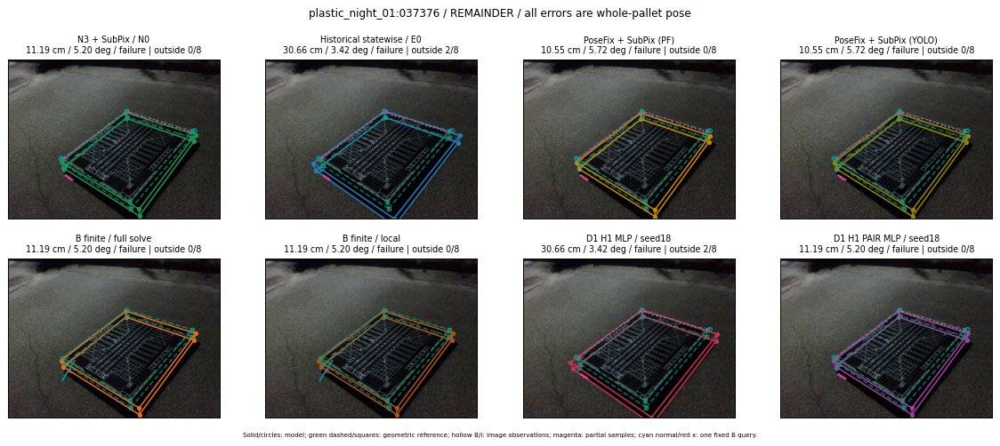

Whole-pallet pose errors; reference is a fixed geometric annotation, not certified physical GT.

Scores are uncalibrated logits. N0 retention is a numerical pose alias; it differs from H0 none or B fallback. B/I and profiles in baseline/B panels are original observations; L panels use new D1 observations. Only one deterministic supported B query is shown in a thumbnail; full support counts are below. Grey privacy rectangles edit the display copy only and are unrelated to O states; all observations were measured on original pixels. Thumbnails use JPEG quality85; detailed scientific panels are PNG.
| Method | Whole pose / cm, deg | Actual source | Selected ID | Score | Archived candidates | Eligible | N0 retained | H0 none | Fallback | Finite profiles |
|---|---|---|---|---|---|---|---|---|---|---|
| Raw YOLO + F | 12.63 cm / 6.29 deg / failure | OTHER | None | N/A | N/A | N/A | False | N/A | None | N/A |
| N3 + SubPix / N0 | 11.19 cm / 5.20 deg / failure | N0 | None | N/A | N/A | N/A | True | N/A | None | N/A |
| Historical statewise / E0 | 30.66 cm / 3.42 deg / failure | E0_REGENERATED | None | N/A | N/A | N/A | False | N/A | False | N/A |
| PoseFix raw | 10.71 cm / 6.01 deg / failure | OTHER | None | N/A | N/A | N/A | False | N/A | None | N/A |
| PoseFix + SubPix (PF) | 10.55 cm / 5.72 deg / failure | OTHER | None | N/A | N/A | N/A | False | N/A | False | historical support records 9; finite audit N/A |
| PoseFix + SubPix (YOLO) | 10.55 cm / 5.72 deg / failure | OTHER | None | N/A | N/A | N/A | False | N/A | False | historical support records 9; finite audit N/A |
| Historical L, seed18 | 11.19 cm / 5.20 deg / failure | N0 | N0 | N/A | 50 | 50 | True | True | True | N/A |
| Historical B fixed bank | 10.43 cm / 2.61 deg / failure | OTHER | G10/ORIGINAL_WD/sample/2 | N/A | N/A | N/A | False | N/A | False | N/A |
| Historical B full | 10.43 cm / 2.61 deg / failure | OTHER | G10/ORIGINAL_WD/sample/2 | N/A | N/A | N/A | False | N/A | False | N/A |
| Historical edge full | 3.51 cm / 85.69 deg / failure | OTHER | NEW/edge/SWAPPED_WD/h0/G13/SWAPPED_WD/sample/0/PROPOSED_NATIVE_YAW_0 | N/A | N/A | N/A | False | N/A | False | N/A |
| Historical AB full | 10.43 cm / 2.61 deg / failure | OTHER | G10/ORIGINAL_WD/sample/2 | N/A | N/A | N/A | False | N/A | False | N/A |
| B finite / fixed bank | 11.19 cm / 5.20 deg / failure | N0 | N0 | N/A | N/A | N/A | True | N/A | True | N/A |
| B finite / full solve | 11.19 cm / 5.20 deg / failure | N0 | N0 | N/A | N/A | N/A | True | N/A | True | N/A |
| B finite / local | 11.19 cm / 5.20 deg / failure | N0 | N0 | N/A | N/A | N/A | True | N/A | True | N/A |
| Edge finite / full solve | 11.19 cm / 5.20 deg / failure | N0 | N0 | N/A | N/A | N/A | True | N/A | True | N/A |
| D0 H0 MLP / seed18 | 11.19 cm / 5.20 deg / failure | N0 | N0 | 1.7815144062042236 | 22 | 22 | True | True | True | N/A |
| D0 H0 MLP / seed19 | 11.19 cm / 5.20 deg / failure | N0 | N0 | 1.694303035736084 | 22 | 22 | True | True | True | N/A |
| D0 H0 MLP / seed20 | 11.19 cm / 5.20 deg / failure | N0 | N0 | -1.0729012489318848 | 22 | 22 | True | True | True | N/A |
| D0 H1 MLP / seed18 | 30.66 cm / 3.42 deg / failure | OTHER | G13/ORIGINAL_WD/endpoint/23 | -2.6736409664154053 | 22 | 22 | False | False | False | N/A |
| D0 H1 MLP / seed19 | 30.66 cm / 3.42 deg / failure | E0_REGENERATED | E0_REGENERATED | -1.8526713848114014 | 22 | 22 | False | False | False | N/A |
| D0 H1 MLP / seed20 | 30.66 cm / 3.42 deg / failure | OTHER | G13/ORIGINAL_WD/endpoint/23 | -3.481722593307495 | 22 | 22 | False | False | False | N/A |
| D1 H0 MLP / seed18 | 11.19 cm / 5.20 deg / failure | N0 | N0 | 7.224756717681885 | 22 | 22 | True | True | True | N/A |
| D1 H0 MLP / seed19 | 11.19 cm / 5.20 deg / failure | N0 | N0 | 6.651742935180664 | 22 | 22 | True | True | True | N/A |
| D1 H0 MLP / seed20 | 11.19 cm / 5.20 deg / failure | N0 | N0 | 6.056931018829346 | 22 | 22 | True | True | True | N/A |
| D1 H1 MLP / seed18 | 30.66 cm / 3.42 deg / failure | E0_REGENERATED | E0_REGENERATED | -0.7794363498687744 | 22 | 22 | False | False | False | N/A |
| D1 H1 MLP / seed19 | 30.66 cm / 3.42 deg / failure | E0_REGENERATED | E0_REGENERATED | -1.3096003532409668 | 22 | 22 | False | False | False | N/A |
| D1 H1 MLP / seed20 | 30.66 cm / 3.42 deg / failure | E0_REGENERATED | E0_REGENERATED | -1.3089102506637573 | 22 | 22 | False | False | False | N/A |
| D1 H1 ROLE AFFINE / seed18 | 11.19 cm / 5.20 deg / failure | N0 | N0 | -0.07713029533624649 | 22 | 22 | True | False | False | N/A |
| D1 H1 ROLE AFFINE / seed19 | 11.19 cm / 5.20 deg / failure | N0 | N0 | -0.09067651629447937 | 22 | 22 | True | False | False | N/A |
| D1 H1 ROLE AFFINE / seed20 | 11.19 cm / 5.20 deg / failure | N0 | N0 | -0.10526569187641144 | 22 | 22 | True | False | False | N/A |
| D1 H1 PAIR MLP / seed18 | 11.19 cm / 5.20 deg / failure | N0 | N0 | -1.7550686597824097 | 22 | 2 | True | False | False | N/A |
| D1 H1 PAIR MLP / seed19 | 11.19 cm / 5.20 deg / failure | N0 | N0 | -1.2512015104293823 | 22 | 2 | True | False | False | N/A |
| D1 H1 PAIR MLP / seed20 | 11.19 cm / 5.20 deg / failure | N0 | N0 | -1.0797322988510132 | 22 | 2 | True | False | False | N/A |
| D1 H1 PAIR ROLE AFFINE / seed18 | 11.19 cm / 5.20 deg / failure | N0 | N0 | -0.7040659189224243 | 22 | 2 | True | False | False | N/A |
| D1 H1 PAIR ROLE AFFINE / seed19 | 11.19 cm / 5.20 deg / failure | N0 | N0 | -0.6179378628730774 | 22 | 2 | True | False | False | N/A |
| D1 H1 PAIR ROLE AFFINE / seed20 | 11.19 cm / 5.20 deg / failure | N0 | N0 | -0.7589066028594971 | 22 | 2 | True | False | False | N/A |
| Regenerated common E0 | 30.66 cm / 3.42 deg / failure | E0_REGENERATED | E0_REGENERATED | N/A | N/A | N/A | False | N/A | False | N/A |